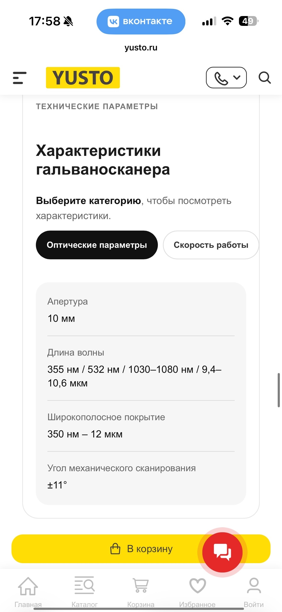

Проработав на заводе полгода, наконец-то уволилась в начале мая и перешла в отважные ряды контен-менеджеров, которые пытаются вести неравный бой с ИИ и доказать, что человека всё равно не заменить. Работаю на данный момент в компании ЮСТО, которая не славится хорошей репутацией, да и от меня требуют всё генерировать в нейронках (даже изображения каких-то деталей от станков или сами станки, которые можно было бы сделать и в 3D), но стараюсь писать ручками и набираться опыта. И параллельно верю, что всё таки смогу добиться каких-то успехов и когда-то увижу ту большую зп айтишника, о которой многие рассказывают, у себя на карточке. Ещё и 1С осваиваю, практику прохожу, Вот подумываю добавить и этот пунктик в свою менюшку